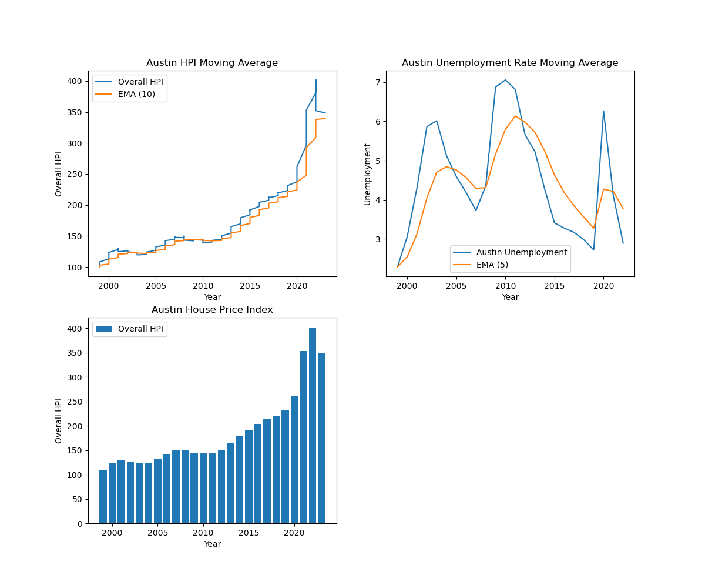
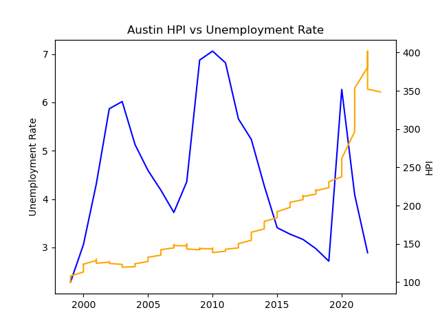

Analysis of Austin HPI and Unemployment Rate


In Finance, HPI (Housing Price Index) measures the changes in the price of residential housing in a desired area for a certain period. Using a data set on the HPI of the Austin Round-Rock area from 2000 to 2020 and packages in Python, I created visualizations to show how housing prices have rapidly increased in the area. One visualization is a line graph that uses a 10-day exponential moving average to smooth out the graph. The other is a simple bar graph. A data set on the unemployment rate in the Austin Round-Rock area is then used to show the relationship between it and the HPI.